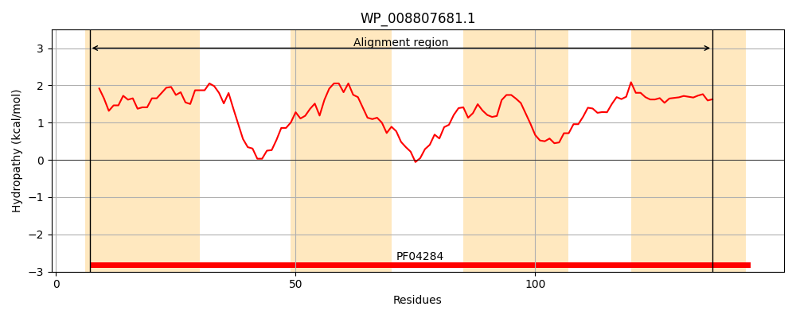
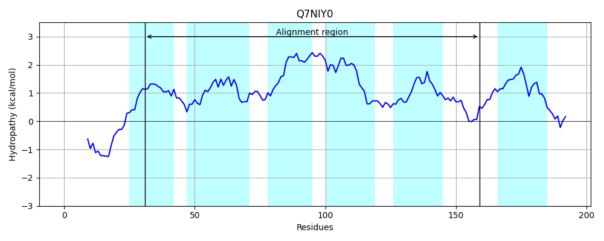
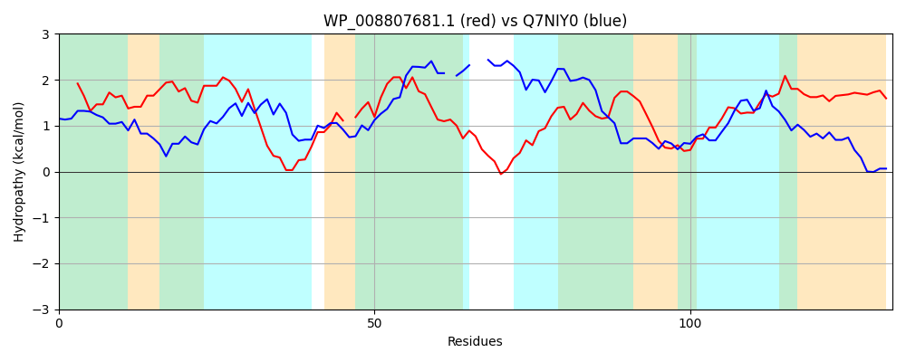

Hit Accession: Q7NIY0
Hit TCID: 3.A.1.18.2
Hit Description: gnl|BL_ORD_ID|15478 gnl|TC-DB|Q7NIY0|3.A.1.18.2 Glr2052 protein OS=Gloeobacter violaceus (strain PCC 7421) GN=glr2052 PE=4 SV=1
Mach Len: 132
e:0.000285
Query TMS Count : 4
Hit TMS Count: 6
TMS-Overlap Score: 3.000000
Predicted Substrates:CHEBI:23337;cobalt(2+)
BLAST Alignment:
| Protein Hydropathy Plots: | |
|---|---|
|  |  |
Pairwise Alignment-Hydropathy Plot: | |
|  | |